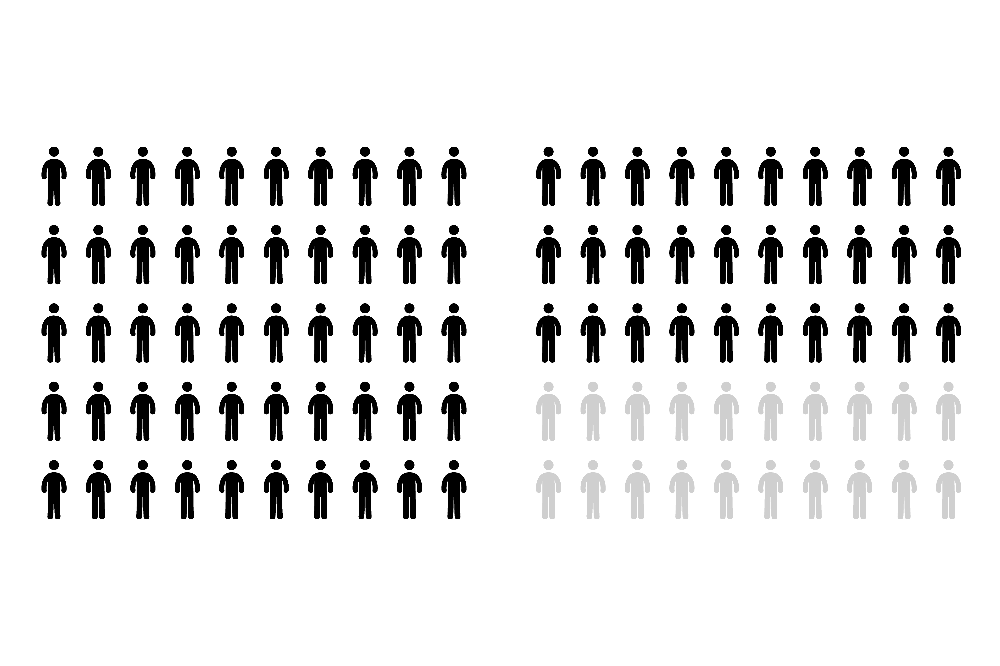
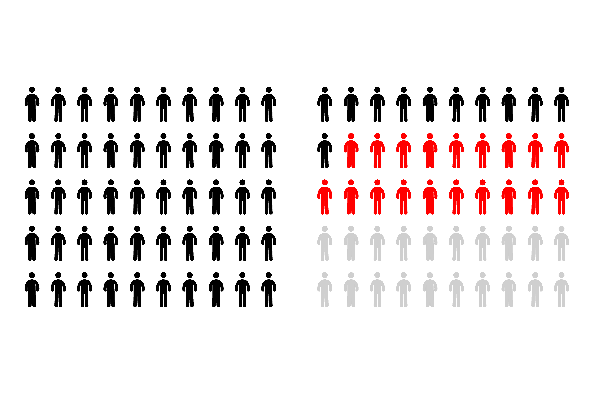

A deep-dive into the harsh conditions facing migrants on
their way to a safer future.

This is a family.

They went on a journey.
Their journey was a migration.
Migrant
Any person who is moving or has moved across an international border or within:
A State away from his/her habitual place of residence,
regardless of the person’s legal status.
Whether the movement is voluntary or involuntary.
What the causes for the movement are; or what the length of the stay is.
It includes migration of refugees, displaced persons, economic migrants, and persons moving for other purposes, including family reunification.
Source: IOM

They were forced to flee their home in Syria …
Because of the civil war raging there since march 2011.
They managed to sell their house in Damascus, but for a fraction of its value. They took all of their savings and managed to get to Beirut, Lebanon.
By the end of 2016,
65.6 million
individuals were forcibly
displaced worldwide
This is equivalent to the
population of the UK

By the end of 2016,
there were also
22.5 million
refugees in the world
This is more than 10 times
the population of Paris


The family decided to continue their journey towards Europe.
Because they dreamt of a safer and brighter future for their children, the parents,
Ammar and Dima, decided to continue their migration.
In order to get to Europe, just like other migrants coming from Syria and the Middle East,
our family had to make a decision between the two Mediterranean migration routes.

The two possible routes : Central & Eastern

Taking the Central route would be the most common solution.
But is this a risk our family will take ?
They could take the Central route and make the journey by sea from Egypt or Libya.
This route is the cheapest, therefore the most travelled through. However, the living conditions
are poor and the journey often deadly as travelling by sea is very risky.
On this route, migrants will have to risk the main cause of death by far: drowning.


Taking the Eastern route would be less risky.
But can they afford it ?
They could choose to travel through Turkey and reach Europe by land with the Eastern route.
This road is less dangerous because they could avoid crossing by boat, but the journey by
land is more expensive. There is also a greater risk to get caught crossing by land.
Although many migrants travel through this route by land, drowning remains the main cause of death.
Vehicle accidents are the second identified cause of death.


Nowadays, travelling through the Mediterranean is one of the most dangerous paths
in the world for migrants.
Despite an increase in migrant flows through the Eastern route since 2015,
the Central route remains the deadliest. Overall, thousands of migrants lose their lives at sea each year.
They had to cross through the Central route because they couldn’t afford to travel by land.
They were separated along the way, like so many other families before them.
Upon the family’s arrival in Italy, two people were missing : Ammar and his sister Haya.

The weight of death and loss on those migration routes is crushing.
Suppose a boat of 100 persons
At their arrival, 20 will be missing
19 will be dead




A few months after they arrived in Europe, the family got the news: Ammar was dead.
It took some time.
But it was only made possible thanks to the initiative of hundreds of aid workers, associations,
journalists, doctors, coastguards… who work hard to gather informations that are incredibly hard
to collect.
Collecting data about missing migrants is an almost impossible task.
But the stakes are high. Because families around the world need closure,
and the world needs to open its eyes on the issue.

The Missing Migrants Project tracks deaths of migrants, including refugees and asylum-seekers,
who have gone missing along mixed migration routes worldwide.
Our data comes from this project, which was created by the International Organisation for
Migration to find out what happened to migrants like Ammar.
The research behind this project began with the October 2013 tragedies, when at least
368 individuals died in two shipwrecks near the Italian island of Lampedusa. Since then,
Missing Migrants Project has developed into an important hub and advocacy source of information
that media, researchers, and the general public access for the latest information.
With a count surpassing 60,000 over the last two decades, IOM calls on all the world’s
governments to address what it describes as “an epidemic of crime and abuse."
Since 2014, the IOM has recorded the deaths of nearly 25,000 migrants. This figure is a
significant indicator of the human toll of unsafe migration, yet fails to capture the true
number of people who have died or gone missing during migration.
And the story we told you is only about two of the most dangerous migration routes in the world.
Take a look at the other deadly routes across the globe. Everywhere, there are more stories like this one to be told.

How can you act ?
As a citizen, you can engage in pushing for welcoming and integrating policies.
You can try and influence your government into taking further actions to protect and shelter
migrants.
You can share the data of the Missing Migrants Project and shed a light on their initiative.
Because by putting ourselves in their shoes for a moment, realizing that we could also be that
family if we were born somewhere else in the world…
We can only feel an urge to help.
If you have any question or remarks regarding the project, the data or the visualizations,
feel free to contact us at : alongjourney@gmail.com
“Our message is blunt: migrants are dying who need not.
It is time to do more than count the number of deaths.
It is time to engage the world to stop this violence against desperate migrants.”
IOM Director General William Lacy Swing
Our story
We are a team of students at Télécom ParisTech working on a project for our Data
Visualization class. We wanted to tackle this issue that is to us fundamental. Because we hear
so much about it, numbers of deaths are hard to comprehend. We wanted to make people understand
our need to act as a society by making them feel something through the tragic journey of this
family, illustrated by data from IOM’s Missing Migrants Project.
Arlène Botokro, Mathilda Di Matteo, Marine Hévin, Florent Votte
December 2017